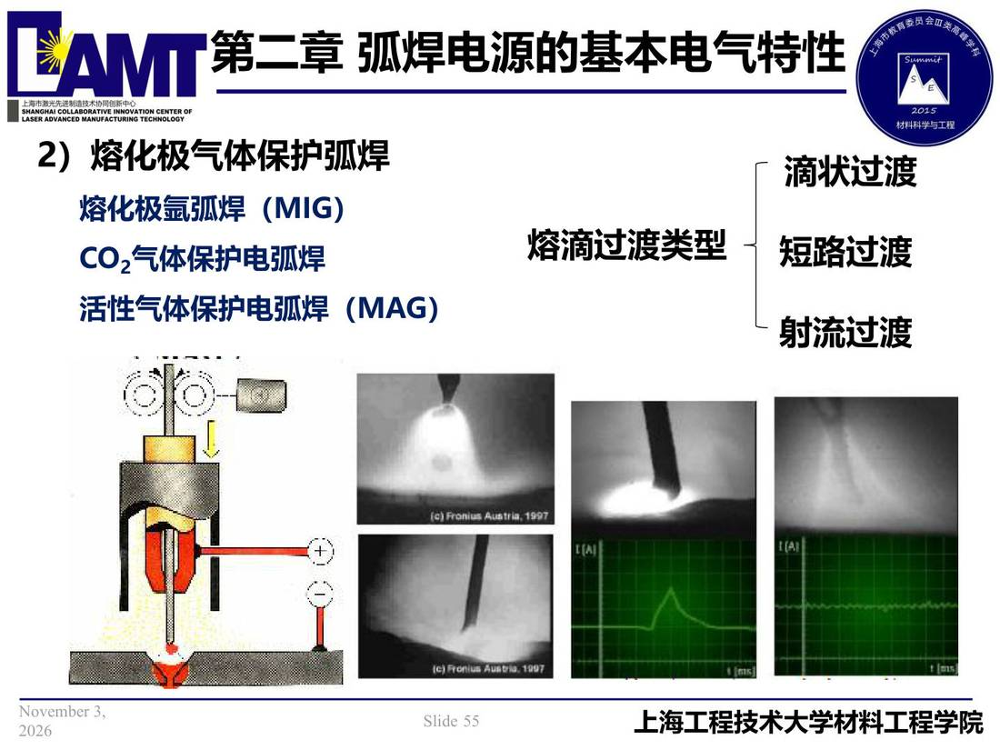

02 第2章 基本电气特性/p055 熔化极气体保护弧焊
p055 熔化极气体保护弧焊
📄 原文：📄 弧焊电源 课件（PDF 第 55 页）（幻灯片 55/273；PDF 第 55 页）
熔化极气体保护弧焊

讲义原文
- 熔化极气体保护弧焊滴状过渡 熔化极氩弧焊（MIG）
熔滴过渡类型
短路过渡
CO2气体保护电弧焊活性气体保护电弧焊（MAG）
射流过渡
页面文字（OCR 机读，可能有错字，以页图为准）
2） 熔化极气体保护弧焊 滴状过渡 熔化极氩弧焊（MIG） COz气体保护电弧焊 熔滴过渡类型 短路过渡 活性气体保护电弧焊（MAG） 射流过渡